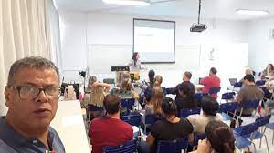
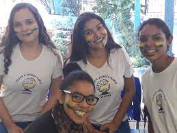
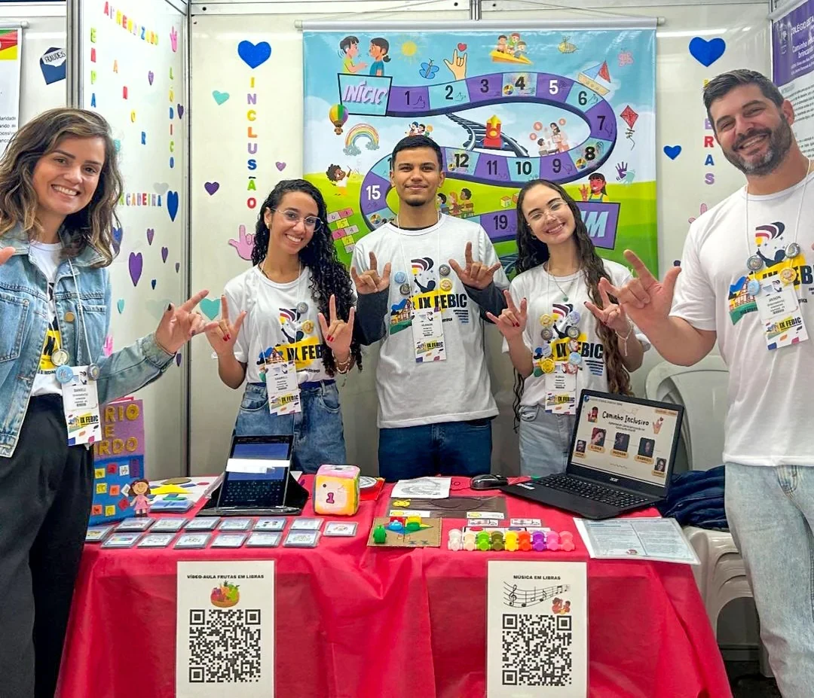
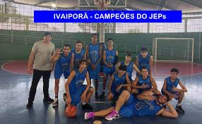
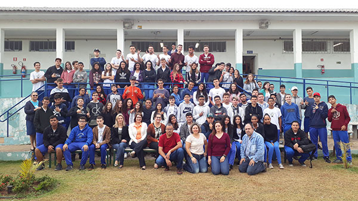

Projetos Especiais
O Colégio Barbosa Ferraz estimula a inovação e o protagonismo estudantil por meio de projetos criativos, sociais e educacionais. Esses projetos complementam o currículo e ampliam a vivência dos alunos em diversas áreas do conhecimento.
Robótica Educacional
Os alunos desenvolvem robôs com kits de montagem, utilizando programação para resolver problemas e competir em torneios estudantis.
Altas Habilidades
O programa desafia estudantes com grande potencial intelectual, incentivando a criatividade, inovação, e pesquisa de temas avançados.
LIBRAS
O ensino de LIBRAS contribui para uma escola mais inclusiva, promovendo a comunicação entre ouvintes e pessoas surdas.
Treinamento Esportivo
Basquete, vôlei, futsal e outras modalidades com foco em disciplina, cooperação, saúde física e participação em torneios.
Projeto Jovem Empreendedor
Os estudantes aprendem a criar e gerenciar negócios, desenvolvendo criatividade, liderança e visão de mercado.
Feira das Profissões
Evento anual com palestras, estandes e visitas de profissionais que ajudam os alunos a conhecer diferentes carreiras.